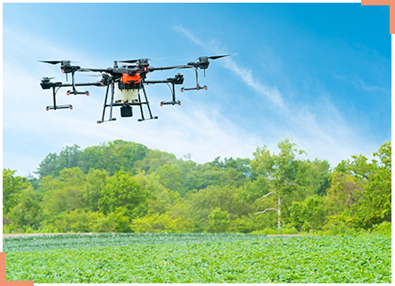
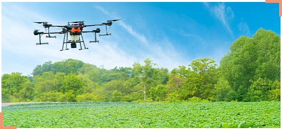
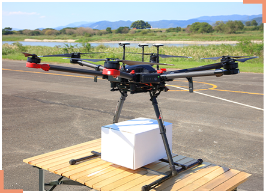
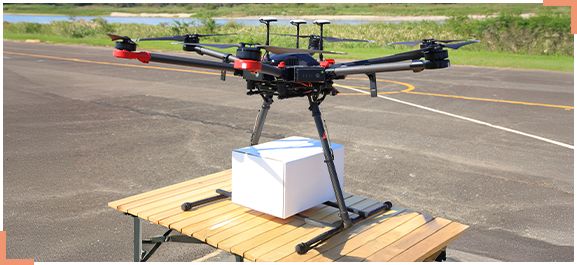
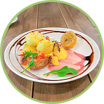
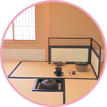

相模女子大学で広がる
新しい学びの可能性を見てみよう！
ＰＲ動画を撮影して魅力をアピール！
ドローンを利用して地域のPR映像を撮影。
上空からの撮影で、人が入りにくい壮大な自然や遠くの場所も魅力的に撮影することができます。
自治体や観光協会、観光施設などで
活躍することができます

生産者の負担を減らすサポート！

農作業をデジタルの力で支援。
農地の上空から作物の状態を確認したり、
農薬散布などの作業をしたりすることができます。
農林水産業界などで
活躍することができます

住み続けられるまちづくりに貢献！

インフラの管理や災害支援で安心なまちを実現。
道路や建物の点検のほか、有事の際は状況の確認や
遠隔地への物資供給を行うこともできます。
インフラ業界・自治体などで
活躍することができます
相模女子大学
地域クリエーション学科では、学びを通して
ドローン操縦の国家資格
「二等無人航空機操縦士」を
実地試験免除で取得することができます。
「二等無人航空機操縦士」とは？
無人航空機（ドローン）を安全に操縦するための知識と技術を証明する、国家資格です。
人口集中地域でも一定条件下で個別飛行許可なしに目視内での飛行が可能で、これからの
社会でビジネスを発展させる資格として、人気が高まっています。
無人航空機（ドローン）を安全に操縦する
ための知識と技術を証明する、国家資格
です。
一定条件下で目視内での飛行が可能で、
これからの社会でビジネスを発展させる
資格として、人気が高まっています。


新設される相模女子大学の
地域クリエーション学科について
もっと知りたい人はこちら！